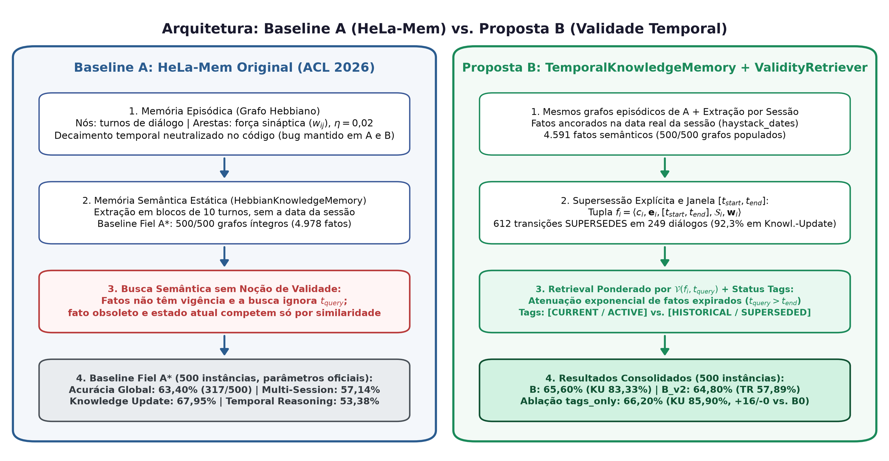
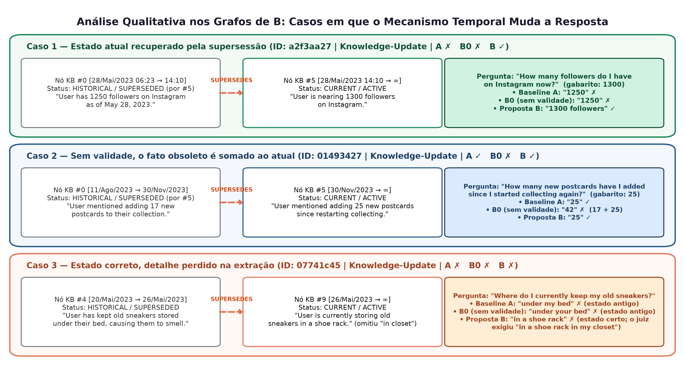
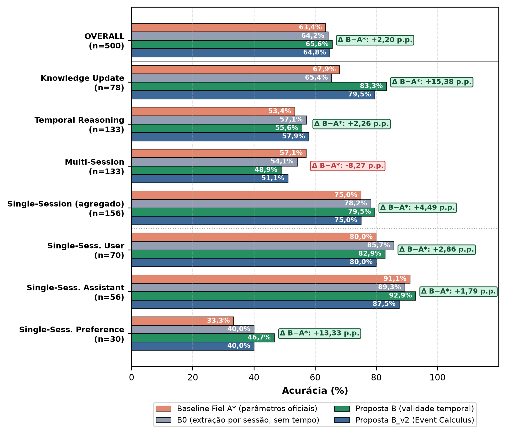
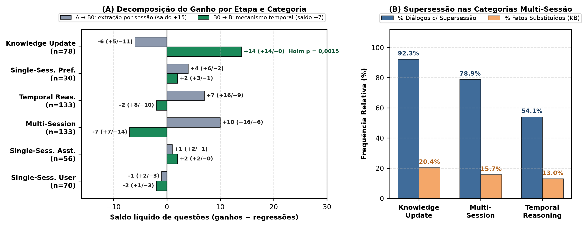
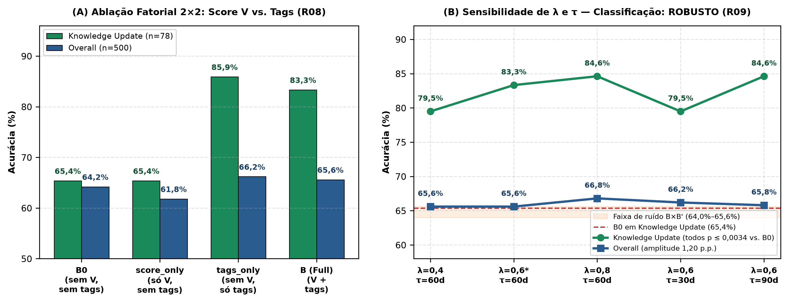

Deep Learning • Prof. Cleber Zanchettin
Validade Temporal e Supersessão de Fatos em Memória Associativa Hebbiana
Como um agente baseado em LLM aprende o que continua verdadeiro hoje sem apagar a sua própria história.
faab@cin.ufpe.br)
“Quando um agente extrai e lembra de mais fatos, ele pode responder pior?”
Sim — quando a memória guarda fatos antigos e fatos atualizados com o mesmo status de verdade. Nós chamamos esse efeito de Fenômeno da Interferência Factual.
tags_only)Três dimensões que a literatura costuma confundir
Uma informação de 2024 ("O conselho aprovou o projeto") continua válida hoje. Uma informação de 6 horas atrás ("Tenho 1.250 seguidores") já pode estar obsoleta.
Quão nova é a memória?
Penaliza memórias pela idade (\(\gamma = e^{-\Delta t / \tau}\)). Falha quando um fato antigo continua verdadeiro ou quando dois fatos conflitantes ocorrem no mesmo dia.
Quão conectada ela é?
Memórias recuperadas juntas fortalecem sua sinapse (\(\Delta w_{ij} = +\eta\)). É o ponto forte do HeLa-Mem (ACL 2026) para raciocínio multi-hop.
Ela ainda é verdade?
Distingue estado vigente de registro histórico. Inspirada em Zep/Graphiti (2025), é a dimensão que faltava na memória hebbiana.
Quando a Similaridade Vetorial Prefere a Mentira Desatualizada
Duas sessões no mesmo dia (28/05/2023). Pergunta em 29/05: "How many followers do I currently have on Instagram?"
“User currently has 1,250 followers on Instagram.”
{"type": "fact"}
“User gained 50 new followers since morning, reaching 1,300 followers.”
{"type": "fact"}
<KNOWLEDGE BASE>
- User currently has 1,250 followers on Instagram.
- User gained 50 new followers since morning, reaching 1,300 followers.
Resposta Gerada (HeLa-Mem A e Ablação B0): "1,250" ❌ (Gabarito: 1,300)Por que erra? O Fato #0 contém literalmente "currently has 1,250 followers", vencendo na similaridade de cosseno. Sem etiqueta de vigência, o LLM confia na frase lexicalmente mais direta.
<KNOWLEDGE BASE> muda com a nossa proposta.
“Você precisa evoluir o artigo-base, não apenas usá-lo como peça.”
Em setembro de 2026 (Fase 1), implementamos do zero os Algoritmos 1 e 2 do GraphSAGE em PyTorch puro e reproduzimos o benchmark PPI com equivalência exata ao PyTorch Geometric (relatórios R01 e R02).
Mas ao aplicarmos o Teste de Substituibilidade, percebemos que o GraphSAGE era apenas um pós-processador para um grafo jurídico da Reforma Tributária: trocá-lo por qualquer outra GNN não mudaria nossa hipótese.
Escolher um tema (Reforma Tributária) → encaixar um artigo de Deep Learning como ferramenta auxiliar.
Encontrar uma fronteira aberta em um artigo recente (ACL 2026) → reproduzir sem modificações → intervir cirurgicamente na sua limitação central.
O Funil da Literatura: De Grafos Estáticos à Memória Hebbiana Temporal
Clique em cada trabalho analisado para ver por que não bastava sozinho e o que contribuiu para o desenho final:
Como o HeLa-Mem organiza a memória do agente
Inspirado na regra neurocientífica de Hebb ("neurônios que disparam juntos se conectam"), o sistema mantém duas estruturas complementares:
HebbianMemoryGraph)Turnos de diálogo + Ativação Espalhada
- Cada turno
user/assistantvira um nó com embedding, keywords e timestamp. - Spreading Activation: um nó altamente relevante transfere ativação aos vizinhos (\(\text{boost} = a_i \cdot w_{ij} \cdot \alpha\)).
- Reforço Hebbiano: nós recuperados juntos na mesma consulta têm sua aresta reforçada (\(\Delta w_{ij} = +\eta\)).
HebbianKnowledgeMemory)Fatos condensados extraídos pelo LLM
- Periodicamente, o LLM analisa os diálogos e extrai fatos atômicos sobre o usuário (
private facts,user profile). - Na hora de responder, o sistema recupera
top_k = 15memórias episódicas esemantic_top_k = 5fatos semânticos. - É aqui que reside a falha temporal: todos os fatos semânticos são tratados como verdades eternas.
Três Limitações Reais no Código Oficial do HeLa-Mem (68f19b3)
compute_time_decay retorna sempre 1.0
retrieve() passa a string current_time no lugar do número tau. A função dá TypeError, cai no except: e retorna 1.0, desativando o decaimento do paper!
# hebbian_memory.py
compute_time_decay(
node["timestamp"],
current_time # <-- String!
) # except -> return 1.0Fatos semânticos recebem a data de hoje
add_knowledge(fact) ignora a data real da sessão (haystack_dates, ex: 2023) e grava get_timestamp() (relógio da máquina em 2026) com metadata={"type":"fact"}.
# knowledge_memory.py
add_node(
content=fact,
timestamp=get_timestamp(),
metadata={"type": "fact"}
)question_date é omitida do Retrieval
O avaliador entrega Current date: {question_date} para o LLM no prompt final, mas chama search_knowledge(question) sem informar em qual data a consulta está sendo feita.
# eval_longmemeval.py
# question_date vai p/ prompt,
# mas NÃO vai para a busca:
kb.search_knowledge(
question, top_k=5
)
TemporalKnowledgeMemory: Fatos com Ciclo de Vida Explícito
Cada fato semântico extraído na sessão de data \(t_{\text{event}}\) passa a ser modelado como uma 5-upla formal:
Fatos Independentes
O novo fato trata de outra entidade ou assunto. Ambos permanecem com status active e janela aberta \([t_{\text{start}}, \infty)\).
Reforço Associativo (\(+\eta\))
O novo fato complementa ou acumula com o anterior sem contradizê-lo. Ambos permanecem ativos e sua ligação hebbiana é reforçada.
Fechamento Não-Destrutivo
Encerra a vigência do fato antigo (\(t_{\text{end}}^{(\text{cand})} \leftarrow t_{\text{event}}\), status superseded) e cria aresta bidirecional \(w = 0{,}8\) preservando o histórico.
Baseline Fiel \(A^*\) vs. Proposta Temporal (\(B / B_{\text{v2}}\))
Abrir imagem original em nova aba ↗
[CURRENT]/[HISTORICAL].
Controles da Equação \(\mathcal{V}(f_i, t_{\text{query}})\)
\(f_1\) (antigo, \(\widetilde{\text{Sim}}=0{,}85\)) foi supersedido no Dia 30 por \(f_2\) (novo, \(\widetilde{\text{Sim}}=0{,}78\)):
Tínhamos 65,60% vs. 61,20% (\(p = 0{,}023\)). Por que não paramos ali?
Em 03/11/2026, a Proposta \(B\) superava a Baseline \(A\) em +22 questões. Mas uma auditoria independente do nosso próprio processo (R05) levantou três perguntas que precisavam ser respondidas:
Por que 360/500 grafos semânticos de \(A\) estavam vazios?
E por que a execução direta em Python usara MAX_FLIPPED=5 e KEYWORD_WEIGHT=0.5 em vez de 3 e 0.7 dos scripts .sh?
Quanto do ganho vinha da extração por sessão?
De \(A\) para \(B\), mudamos a extração semântica e adicionamos validade temporal ao mesmo tempo. Precisávamos de uma ablação \(B_0\).
Qual o piso de ruído sob temp=0.7? E qual é o dataset real?
Descobrimos que o longmemeval_s.json distribuído no repositório do HeLa-Mem contém apenas as sessões de evidência (recorte oracle).
Não era brevidade dos diálogos. Era falha silenciosa de concorrência no código oficial.
Nos blocos finais da Baseline \(A\) (itens 350 a 500), 98% a 100% dos grafos semânticos estavam vazios, embora esses diálogos tivessem em média 23,5 turnos.
eac54adc):
Executamos o código oficial do HeLa-Mem no item 400 com workers=1 (sequencial). Ele extraiu 9 nós semânticos perfeitos! Sob multithreading, disputas no SentenceTransformer/API lançavam exceções que eram engolidas pelo try/except de process_incremental_buffer.
Baseline Fiel (\(A^*\)): 500/500 Grafos Íntegros e Reprodução Exata de Multi-Session
Reexecutamos a codificação e avaliação oficial com controle de concorrência (workers=2) e parâmetros estritos dos scripts (MAX_FLIPPED=3, KEYWORD_WEIGHT=0.7, TOP_K=15, BUFFER_SIZE=10):
4.978 nós semânticos extraídos (contra 72% vazios em \(A\)).
317/500 acertos (+2,20 p.p. acima dos 61,20% de \(A\)).
76/133 acertos — idêntico aos 57,14% da Tabela 6 do paper ACL 2026!
Caiu de 73,08% (\(A\)) para 67,95% (53/78) quando os grafos encheram!
O Fenômeno da Interferência Factual e sua Resolução Temporal
Comparamos 4 condições em knowledge-update para separar a densidade de fatos da validade temporal:
72% dos grafos semânticos vazios: o modelo lê só os turnos episódicos brutos.
100% dos grafos cheios sem validade: fatos antigos e novos competem no topo do prompt.
Extração densa por sessão sem validade temporal: máxima interferência entre estados.
Mesmos fatos de \(B_0\) + validade temporal: +17,95 p.p. (\(p_{\text{Holm}}=0{,}0015\)); +12 vs \(A^*\) (\(p=0{,}0042\)).
Quando a Ablação \(B_0\) Soma o Passado com o Presente
01493427 (Coleção de Cartões-Postais)Na Sessão 1, o usuário tinha 17 cartões-postais. Na Sessão 2, adquiriu +8 e declarou ter 25 no total.
- • Baseline \(A\) (grafo vazio): lê o diálogo →
"25"✅ - • Ablação \(B_0\) (sem validade): recebe
- has 17e- has 25como fatos ativos e soma os dois →"42"❌ - • Proposta \(B\): marca 17 como
[HISTORICAL]e 25 como[CURRENT]→"25"✅
No Caso 3 (07741c45, localização dos tênis), \(B\) corrige o anacronismo temporal, mas o extrator resume "shoe rack in my closet" para "closet", ilustrando uma limitação de granularidade lexical do extrator.

*_long_term_kb_graph.json
Ampliar Figura 4 ↗


knowledge-update, \(B_0 \rightarrow B\) produz +14 acertos líquidos (+14/−0); em multi-session, produz −7 (+7/−14).
Ablação Fatorial \(2 \times 2\) sobre os Mesmos 500 Grafos
Clique em cada quadrante para inspecionar o papel isolado do score \(\mathcal{V}\) e das etiquetas [CURRENT]/[HISTORICAL]:
Por que score_only tem efeito nulo no recorte oracle, mas \(\mathcal{V}\) continua necessário em escala real?
O gargalo não é o Recall@5, é a Desambiguação
Com apenas ~9 fatos no grafo e semantic_top_k = 5, tanto o fato antigo quanto o fato novo entram nos top-5 mesmo quando o fato antigo é penalizado por \(\mathcal{V}\).
Sem etiquetas (score_only), ambos chegam ao prompt como afirmações válidas (apenas em ordem trocada), mantendo a interferência factual. As etiquetas [CURRENT]/[HISTORICAL] resolvem 100% da ambiguidade.
\(\mathcal{V}(f_i, t_{\text{query}})\) governa o Filtro de Top-K
Quando um usuário acumula centenas de fatos ao longo de meses, múltiplos estados expirados com alta similaridade lexical competiriam pelas 5 vagas do top-k.
Nesse regime, \(\mathcal{V}(f_i, t_{\text{query}})\) impede que fatos obsoletos expulsem o fato vigente do top-5, enquanto as etiquetas desambiguam os candidatos sobreviventes no prompt.
O Trade-off de Over-Supersession e a Proposta \(B_{\text{v2}}\) (Event Calculus)
Em multi-session, muitas perguntas exigem somar eventos ao longo do tempo (ex.: "Quantos cursos online concluí?" — caso c2ac3c61). O classificador de \(B\) às vezes marcava o Curso 2 como SUPERSEDES do Curso 1, fazendo o LLM excluí-lo da contagem.
Apenas Atributos Unívocos / Estados Mutuamente Exclusivos
Sem nenhum exemplo de domínio no prompt (eliminando viés de prompt), SUPERSEDES fica restrito a transições onde uma entidade não pode ocupar dois estados simultâneos (localização atual, empregador, estado civil, meta ativa).
Eventos Históricos, Transações e Entidades Coexistentes
Eventos pretéritos, compras, viagens ou itens adicionais nunca deixam de ter ocorrido quando novos eventos acontecem; eles se acumulam permanentemente na linha do tempo como EXTENDS.
v1 e v2) estão parametrizados via CLI (--classifier_mode {v1,v2}).
Precisão Empírica Auditada (\(n = 45\) por sistema)
| Categoria | Volume (\(B \rightarrow B_{\text{v2}}\)) | Precisão \(B\) | Precisão \(B_{\text{v2}}\) |
|---|---|---|---|
| knowledge-update | 159 → 86 (−45,9%) | 66,7% (10/15) | 66,7% (10/15) |
| temporal-reasoning | 183 → 70 (−61,7%) | 13,3% (2/15) | 53,3% (8/15) ↑4× |
| multi-session | 270 → 128 (−52,6%) | 20,0% (3/15) | 26,7% (4/15) |
| Total Estratificado | 612 → 284 (−53,6%) | 33,3% (15/45) | 48,9% (22/45) |
34 dos 500 itens do LongMemEval têm datas fora de ordem!
Ao investigar os falsos positivos em temporal-reasoning, descobrimos que o JSON oficial lista sessões mais antigas depois de sessões mais novas em 34 itens.
Isso gerava supersessões reversas (\(t_{\text{end}} < t_{\text{start}}\)) 100% concentradas em temporal-reasoning. Adicionamos a guarda --chronological_guard para eliminar essa classe de erro.
Sob temperature=0.7, a réplica completa \(B'\) teve 7,20% de pares discordantes no geral (65,60% vs. 64,00%, \(p=0{,}243\)), mas 97,44% de estabilidade em Knowledge Update: ambas cravaram 83,33% (65/78) (+1/−1).
Variando \(\lambda \in \{0{,}4; 0{,}6; 0{,}8\}\) e \(\tau \in \{30, 60, 90\}\text{d}\) sem seleção no teste:
- • Global: 65,60% a 66,80% (amplitude 1,20 p.p. < ruído 1,60 p.p.)
- • KU: 79,49% a 84,62% (todos \(p \le 0{,}0034\) vs. \(B_0\))

Todas as 12 Condições Experimentais Avaliadas (\(N = 500\))
Tabela responsiva com cabeçalhos fixos (sticky)| Condição Experimental | OVERALL (500) | KU (78) | TR (133) | MS (133) | Papel Metodológico / Achado Principal |
|---|---|---|---|---|---|
| 1. Baseline \(A\) (Inicial) | 61,20% (306) | 73,08% (57) | 51,88% (69) | 46,62% (62) | 360/500 grafos semânticos vazios (concorrência) |
| 2. Baseline Fiel \(A^*\) (R03) | 63,40% (317) | 67,95% (53) | 53,38% (71) | 57,14% (76) | 0 vazios; MS idêntico ao paper ACL 2026 (57,14%) |
3. Ablação \(B_0\) (no_temporal) |
64,20% (321) | 65,38% (51) | 57,14% (76) | 54,14% (72) | Isola extração por sessão; prova interferência factual |
4. Ablação score_only (R08) |
61,80% (309) | 65,38% (51) | 53,38% (71) | 51,13% (68) | Só \(\mathcal{V}\) sem etiquetas: efeito nulo em KU (\(p=1{,}000\)) |
5. Ablação tags_only (R08) ★ |
66,20% (331) | 85,90% (67) | 56,39% (75) | 51,13% (68) | Motor causal no oracle (+16/−0 vs \(B_0\), \(p<0{,}0001\)) |
| 6. Proposta \(B\) (\(\lambda=0{,}6, \tau=60\text{d}\)) | 65,60% (328) | 83,33% (65) | 55,64% (74) | 48,87% (65) | +12 vs \(A^*\) (\(p=0{,}0042\)); +14/−0 vs \(B_0\) (\(p_{\text{Holm}}=0{,}0015\)) |
| 7. Réplica \(B'\) (Piso de Ruído R06) | 64,00% (320) | 83,33% (65) | 51,13% (68) | 50,38% (67) | 97,44% de estabilidade em KU (+1/−1) |
| 8. Proposta \(B_{\text{v2}}\) (Event Calculus) | 64,80% (324) | 79,49% (62) | 57,89% (77) | 51,13% (68) | −53,6% supersessões; precisão TR 13,3%→53,3% |
| 9–12. Sensibilidade (\(\lambda \in \{0{,}4;0{,}8\}, \tau \in \{30,90\}\text{d}\)) | 65,60%–66,80% | 79,49%–84,62% | 53,38%–58,65% | 49,62%–51,88% | Resultado classificado como ROBUSTO (todos \(p \le 0{,}0034\)) |
results/ e auditáveis sem chamadas de API.
A hipótese é fortemente suportada em atualização de conhecimento (+15,38 p.p. sobre \(A^*\), \(p=0{,}0042\); +17,95 p.p. sobre \(B_0\), \(p_{\text{Holm}}=0{,}0015\); +20,52 p.p. em tags_only, \(p<0{,}0001\)) e não suportada como ganho global uniforme devido ao trade-off estrutural entre substituição de estado e contagem cumulativa em multi-session, mitigado via Event Calculus (\(B_{\text{v2}}\)).
Porque o LongMemEval agrega 6 categorias com demandas cognitivas opostas: apenas knowledge-update (78 itens) testa substituição de estado, enquanto multi-session (133 itens) testa contagem cumulativa. Na categoria-alvo (knowledge-update), o efeito é altamente significativo tanto contra \(A^*\) (+12 líquidos, \(p = 0{,}0042\)) quanto contra \(B_0\) (+14/−0, \(p_{\text{Holm}} = 0{,}0015\)), mais de 6 vezes acima do piso de ruído. No agregado global, esse ganho é parcialmente compensado pela over-supersession em multi-session, diagnosticada em R07 e mitigada por \(B_{\text{v2}}\).
Ela é redundante apenas no regime oracle (~9,18 fatos/grafo e semantic_top_k=5), onde tanto o fato antigo quanto o novo entram no top-5 mesmo com \(\mathcal{V} \equiv 1\). Nesse regime, o gargalo é a desambiguação no prompt (resolvida pelas etiquetas). Em bancos longos com dezenas de sessões distratoras (>150 fatos/grafo), \(\mathcal{V}(f_i, t_{\text{query}})\) passa a ser indispensável como filtro de recall@5 para evitar que estados obsoletos ocupem as vagas do top-k.
Não, porque reportamos duas âncoras complementares: (1) \(B_0 \rightarrow B / B_{\text{v2}} / \texttt{tags\_only}\) é 100% pareada sobre exatamente os mesmos 500 grafos episódicos e semânticos (+14/−0 em \(B\), +16/−0 em tags_only); e (2) contra a Baseline Fiel \(A^*\) (parâmetros oficiais e 0 grafos vazios), \(B\) mantém +12 acertos líquidos em KU (\(p = 0{,}0042\)) e \(B_{\text{v2}}\) mantém +9 (\(p = 0{,}0117\)). Além disso, \(A^* \rightarrow B_0\) em KU é estatisticamente neutra (53 vs. 51, \(p = 0{,}8145\)).
Pela inspeção programática dos dados (AGENT.MD §4): em R05 constatamos que haystack_session_ids == answer_session_ids nos 500 itens de data/longmemeval_s.json (1–6 sessões de evidência, variante oracle). Em R07 constatamos que 34/500 itens têm haystack_dates fora de ordem cronológica no JSON, gerando supersessões reversas exclusivamente em temporal-reasoning.
Na consulta/inferência, o custo extra de chamadas de LLM é ZERO (\(\mathcal{V}\) e as etiquetas são calculados deterministicamente em Python). O custo extra ocorre apenas na ingestão quando um novo fato atinge similaridade \(\ge 0{,}35\) com fatos ativos de sessões anteriores (até 4 candidatos). Nos 156 itens de sessão única, o sobrecusto de ingestão também é zero.